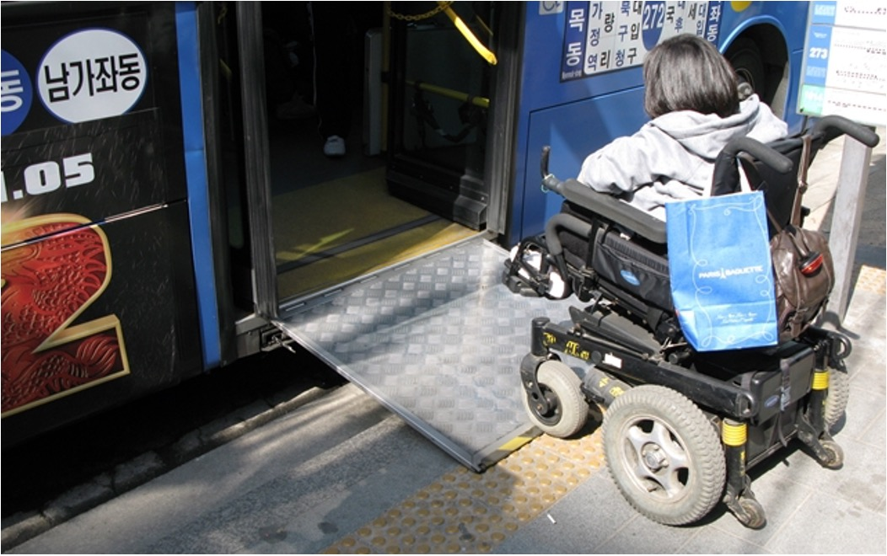
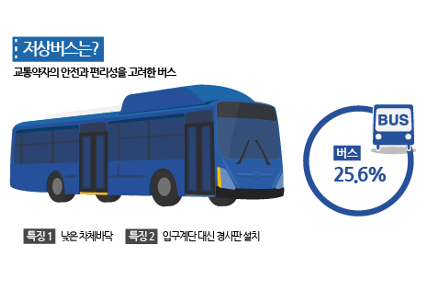
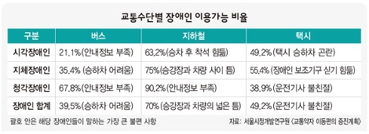
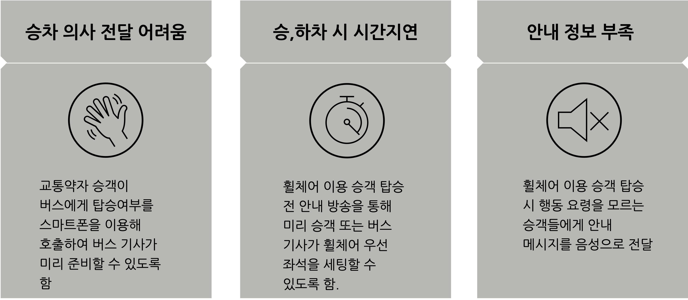

Design
Desirable
dding
개발 배경
현재 휠체어 이용 승객이 탑승할 수 있는 저상버스가 전국적으로 운행중




개선 방향

승차 의사 전달 어려움
교통약자 승객이 버스에게 탑승여부를 스마트폰을 이용해 호출하여 버스 기사가 미리 준비할 수 있도록 함
승,하차 시 시간지연
휠체어 이용 승객 탑승 전 안내 방송을 통해 미리 승객 또는 버스 기사가 휠체어 우선 좌석을 세팅할 수 있도록 함.
안내 정보 부족
휠체어 이용 승객 탑승 시 행동 요령을 모르는 승객들에게 안내 메시지를 음성으로 전달